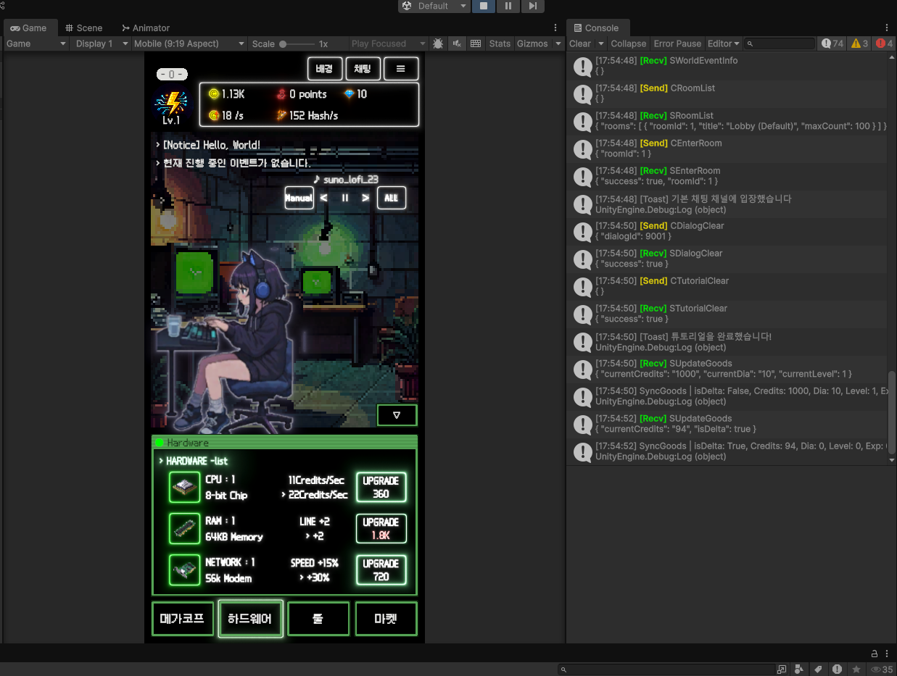

특정 게임에 종속되지 않고, 엑셀로 수치를 굳히기 전에 "감"을 먼저 잡아보기 위한 범용 도구입니다.
기준 스탯 → 대미지 공식 → 성장 곡선 → 가치 환율 → 경험치 곡선을 하나의 마법사로 잇고,
몬테카를로 시뮬레이션 · 가챠 천장 · 장비 파밍을 부록으로 분리했습니다.
패널 간 수치가 자동으로 이어지도록 설계하되, 어디까지 연동시키고 어디서 끊어야 설계 자유도가
남는지 직접 판단해서 구조를 잡음
전투를 자동으로 반복 시뮬레이션해 DPS·치명타·TTK를 실시간으로 보여주고, "승률이 같아도 분산이
다르면 체감이 다르다"는 걸 그래프로 직접 확인할 수 있게 구성
사이버펑크 방치형 성장 게임 · 기획 + 서버(C++ IOCP) 직접 담당, 클라이언트(Unity)는 팀원 1명과 협업
해커가 되어 거대 기업("메가코프")의 서버를 해킹하는 사이버펑크 방치형 게임. 핵심 루프는
해킹(자동/수동) → 크레딧 획득 → 하드웨어·악명(환생) 업그레이드 → 상위 티어 해킹이며,
경제·성장·소셜/라이브·UI/UX를 각각 별도 문서로 기획하고 서버(C++ IOCP)를 직접 구현했습니다.
클라이언트(Unity)는 팀원 1명이 맡았습니다.

성장을 하드웨어(리셋 시 0으로 초기화)·해킹 툴(슬롯만 초기화, 영구 소장)·악명(영구 누적) 3축으로 나누고,
축마다 리셋 정책을 다르게 설계해 인플레이션 쾌감·전략성·명예라는 서로 다른 재미를 배치
업그레이드 비용을 baseCost × 1.15^레벨 지수 공식으로 설계해, 무한 성장을 허용하면서도
후반으로 갈수록 체감 성장 속도를 조절
오프라인(복귀) 보상 = CPS × 경과시간 × 배율(기본 0.5배, 전용 툴 보유 시 1.0배), 최대 12시간 누적,
서버 타임스탬프로 검증해 시간 조작을 방지
메가코프 공략을 위협도(DPS) vs 보안 수준(HP) 체크로 단순화하고, 5단계 보안 레이어
(외부 방화벽 → 게이트키퍼 → 메인프레임)로 계단식 난이도를 설계, 실패 시 파밍 모드로 자동 전환 후 재도전
크레딧 표기를 K/M/B 단위로 자동 전환하고, 획득 경로를 해킹·오프라인 보상·업적·라이브 이벤트
4종으로 다각화해 경제 루프에 굴곡을 줌
소셜 시스템의 기획 의도를 "혼자 하지만 거대한 해커 네트워크의 일원"이라는 방치형 게임 특유의
고독함 해소로 정의하고, 글로벌 알림·익명 채팅으로 구현